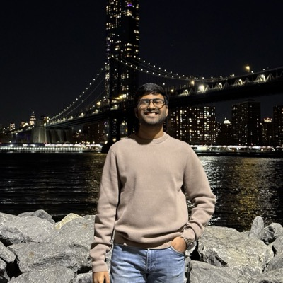

June 2026 – present
Partner Engineer, Generative AI
Meta, Menlo Park, CA

I help release Meta’s open models, including Muse Spark and Muse Glimmer.
Before joining Meta, I won first place with my team at Meta’s OpenEnv Hackathon in SF. We built an RL environment that teaches a small LLM to diagnose and fix real Kubernetes incidents from scratch.
I hold an MS in Computer Science from NYU, where I researched 3D computer vision under Prof. David Fouhey and was a course assistant for Learning with Large Language and Vision Models, a graduate course taught by Prof. Saining Xie.
In my free time, I enjoy reading fiction and non-fiction, watching movies, and photography. Feel free to reach out if you’d like to chat.
June 2026 – present
Meta, Menlo Park, CA
April – June 2026
Centific, remote
2026
First place out of 100+ teams, OpenEnv Hackathon (PyTorch, Cerebral Valley)
An RL environment where a small language model diagnoses and fixes live Kubernetes incidents on GKE via kubectl, with zero hardcoded knowledge of the cluster. An adversarial incident designer targets tracked weaknesses, and an LLM judge scores SRE workflow quality across expert personas.
We post-trained Qwen-series models with GRPO via TRL and vLLM. The agent learned to discover cluster topology, identify faults, and apply correct fixes from reward signal alone. View the code on GitHub.
September 2025 – March 2026
Granica AI, Mountain View, CA
January 2024 – May 2025
NYU, New York, NY
Researched 3D computer vision in the CILVR lab under Prof. David Fouhey, and assisted three graduate courses: Learning with Large Language and Vision Models (Prof. Saining Xie), Deep Learning (Prof. Chinmay Hegde), and Advanced Topics in Computer Vision (Prof. Fouhey).
Earlier projects are on GitHub.
2023 – 2025
Master of Science in Computer Science; GPA: 3.83/4
2019 – 2023
Bachelor of Technology in Electrical Engineering, minor in Astronomy; GPA: 8.49/10